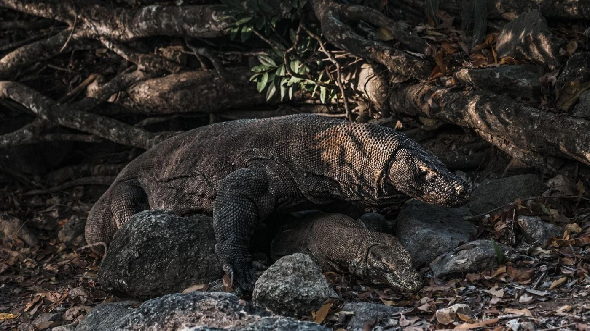
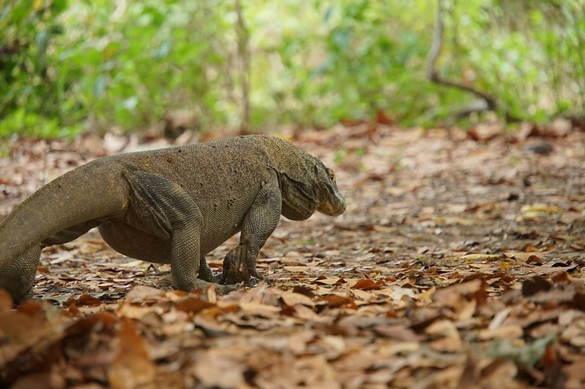
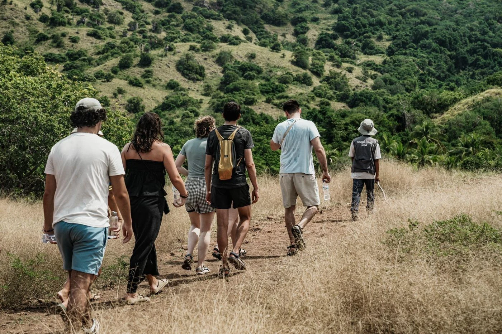
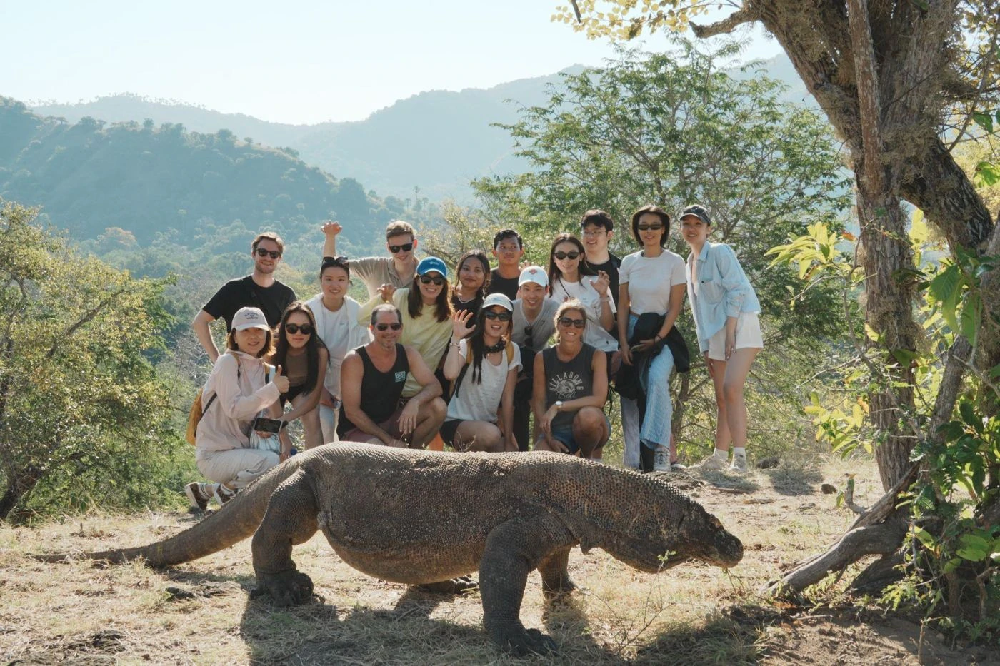

In this guide
“The boat slows down. Ahead, golden hills rise straight out of the sea, and a wooden jetty waits at Loh Liang. Somewhere on that savanna, a three-meter lizard is warming up in the morning sun.”
A Komodo Island tour is the one experience you cannot get anywhere else on earth. Komodo dragons live in the wild only on a few islands in East Nusa Tenggara, and Komodo Island is home to the largest population. Join a sailing trip from Labuan Bajo with Kapalsantai, and you will walk the same trails as these prehistoric predators, guided by a local ranger.
Here is everything you need to plan your Komodo Island tour in 2027: trekking routes, safety rules, best season, fees, and what to pack.


Why Is a Komodo Island Tour So Special?
The Home of the World's Largest Lizard
Komodo dragons (Varanus komodoensis) live naturally on only a handful of islands: Komodo, Rinca, Gili Motang, Gili Dasami, and parts of western Flores. Komodo Island holds the biggest population. As a result, seeing them here means seeing them truly wild, hunting deer and resting under tamarind trees.
A UNESCO World Heritage Landscape
UNESCO named Komodo National Park a World Heritage Site in 1991. On Komodo Island, dry savanna, rocky ridges, and monsoon forest meet the sea. Besides dragons, you may spot Timor deer, wild boar, and the rare yellow-crested cockatoo.

Things to Do on a Komodo Island Tour
1. Guided Trekking at Loh Liang
Every visit starts at the Loh Liang ranger station. You cannot walk alone, because an official guide with a forked stick leads every group. Guides usually offer routes of different lengths, so pick the one that fits your group:
| Route | Approx. distance | Good for |
|---|---|---|
| Short trek | about 600 m | Families and first-timers |
| Medium trek (to Sulphurea Hill) | about 700 m, with a gentle climb | Views over the bay |
| Long trek (to Banu Nggulung) | about 1.5 km | Wildlife lovers with more time |
In general, the trails are flat and wide. Your ranger chooses the route based on the season and on where dragons appeared that day.
2. Snorkel at Pink Beach
Pink Beach (Pantai Merah) sits on the coast of Komodo Island. The pink color of its sand comes from tiny fragments of red organisms mixed with white sand. Just offshore, shallow reefs are home to clownfish, parrotfish, and the occasional sea turtle. Also, check the availability of the snorkeling gear provided on trips with Kapalsantai.
3. Combine It With Padar, Manta Point, and Taka Makassar
Komodo Island is rarely a single stop. That is why most sailing itineraries pair it with the sunrise hike on Padar Island, a drift snorkel at Manta Point, and a walk around the Taka Makassar sandbank.
Komodo Island Tour Safety Rules
Komodo dragons are wild predators. Therefore, follow these rules on every Komodo Island tour to keep yourself and the animals safe:
- Stay With Your Ranger
Never leave the group or wander off the trail. - Keep Your Distance
Stay at least 5 meters away, even when a dragon looks asleep. - Tell the Ranger About Wounds
Dragons are sensitive to the smell of blood. Let your ranger know if you have an open wound or are menstruating. - No Food, No Flash
Never feed the animals, and turn off your camera flash.
When Is the Best Time for a Komodo Island Tour?
- April to October (dry season): Clear skies, calm seas, and dry trails. Dragons are easier to spot on the open savanna. This is also peak season, so book early.
- November to March (rainy season): Greener hills and fewer boats, but choppier seas and slippery paths. Some trips may change route due to weather.
Around the mating season in the middle of the year, dragons can be less visible near the main trails of a Komodo Island tour. However, your ranger will know where to look.
Komodo National Park Fees and Visitor Quota
All visitors on a Komodo Island tour pay a national park entrance ticket plus guide and local fees. Fees for foreign and Indonesian visitors are different and have changed several times, so always check the latest rate before you travel.
Since 1 April 2026, the park limits visits to 1,000 people per day, booked through the park's SiOra system. On Kapalsantai trips, our team handles permits and quota booking for you, so you can relax and enjoy the trip.

Frequently Asked Questions
Is it safe to visit Komodo Island?
Yes, as long as you follow your ranger's instructions. Trained rangers accompany every group, and visitors must stay on the marked trails. Also, let the ranger know if you have an open wound or are menstruating, so they are aware of what can and cannot be done.
Will I definitely see a Komodo dragon?
Sightings are very likely, especially in the dry season, but they are never guaranteed. After all, these are wild animals that move freely.
How do I get to Komodo Island from Labuan Bajo?
By boat only. Most travelers join a day trip or a multi-day sailing trip from Labuan Bajo. Travel time depends on the boat type and the itinerary, so check out your preferred trip on Kapalsantai.
Can I fly a drone on Komodo Island?
Drones need a separate permit from the park authority, so ask your operator or Kapalsantai’s customer service before your trip.
What to Pack for a Komodo Island Tour
- Closed-toe walking shoes for the trek
- Light, long-sleeved clothing and a hat
- Reef-safe sunscreen
- A refillable water bottle
- Swimwear and a rash guard for Pink Beach
- Power bank and spare camera battery
- Cash for small purchases at the Loh Liang souvenir stalls
Ready to Walk With the Dragons?
Standing a few meters from a living dinosaur is something you will talk about for years. Pair it with Pink Beach, Padar's sunrise, and the mantas of Komodo, and you have one of the best sea journeys in Indonesia.
Explore Kapalsantai's open trip schedules and private liveaboard charters and start planning your Komodo Island tour today. We handle the permits and the sailing; you just bring your curiosity.
Explore Komodo Trips